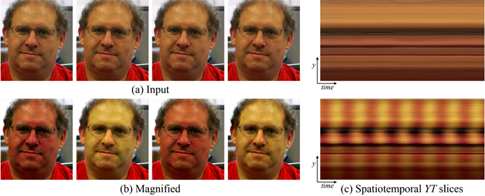

動画内の、肉眼では捉えられないほどの微小な動き（振動や変形）や色の変化を、コンピューターによる画像処理で拡大し、目に見える形にする技術。
例えば、「人間の顔の血流によるわずかな赤みの変化（心拍）」 や、「橋や建造物が風でわずかに揺れる様子」 などを、特別な高精度カメラではなく、一般的なカメラの映像から浮かび上がらせることができます

オイラービデオ拡大フレームワークを用いて人間の脈拍を可視化した例。(a) 元のビデオシーケンス（顔）の4フレーム。(b) 同じ4フレームで被験者の脈拍信号を増幅したもの。(c) 入力ビデオ（上）と出力ビデオ（下）の垂直走査線を時間経過に沿ってプロットしたもの。周期的な色の変化が増幅される様子を示している。入力シーケンスでは信号は目立たないが、拡大されたシーケンスでは変化が明瞭に確認できる。
この技術の歴史は、大きく分けて「ラグランジュ的（Lagrangian）」と「オイラー的（Eulerian）」という2つのアプローチに分類されます。
物体の特定の「点（ピクセル）」や特徴的な輪郭を直接追跡（トラッキング）し、その移動軌跡を計算して引き伸ばす手法です。流体力学における「個々の粒子の動きを追う（ラグランジュ的）」考え方に似ています。
非常に複雑な動きの計算が必要で、物体の境界でノイズや不自然な歪みが生じやすく、処理に膨大な時間がかかりました。
● 『Motion Magnification』（2005）
世界で初めて「映像の中の目に見えない動きを拡大する」という概念を提唱したラグランジュ的アプローチの金字塔です。物体の動きのレイヤー分解やテクスチャ合成を用い、静止画では見えない構造の歪みなどを可視化しました。
物体を追跡するのではなく、固定された「画素（ピクセル）そのもの」の輝度や色の時間的変化（信号）に着目し、その変動成分だけをフィルターで抽出して増幅する手法です。流体力学における「固定された空間の1点を見る（オイラー的）」考え方に由来します。
計算が極めてシンプルかつ高速で、境界線のバグが出にくく、リアルタイム処理が可能になりました。
● 『Eulerian Video Magnification for Revealing Subtle Changes in the World』 （SIGGRAPH 2012）
機械翻訳は こちら
現在のビデオ増幅技術のベースとなっている最も画期的な論文
映像を空間的（ラプラシアンピラミッド）に分解し、時間軸方向のバンドパスフィルターを通すだけで、 「特徴点を1つも追跡することなく」人間の心拍による顔色の変化や、呼吸による赤ちゃんの胸の微小な動きを、標準的な動画からリアルタイムに可視化してみせました。
● 『Phase-Based Video Motion Processing』 (2013)
2012年の線形手法で発生しやすかったノイズを抑えるため、画像の「位相情報」を使って動きを滑らかに大きくする手法が開発されました。
Phase Video の PyTorch 実装が公開されている。
(環境構築手順)
・https://github.com/itberrios/phase_based/tree/main
Code → Download ZIP
・phase_based-main.zip を解凍する
・cd phase_based-main
・PyTorchをインストールする
PyTorch
(手持ちGPUの都合により) PyTorch 1.13で試した。
・pip install opencv-python
PyTorch 1.13の場合、numpyのversionが合わなくなったので
pip install numpy==1.26 に戻した。
・pip install scipy
・pip install matplotlib
(実行方法)
10秒程度の動画の処理時間
CPU：数分～10分
GPU：数十秒
くらい掛かる。
motion_magnification.py を書き換える。
ギターの場合：変更箇所は--video_pathの行のみ
if __name__ == '__main__':
args = vars(ap.parse_args(
["--video_path", "guitar.mp4", # ここで動画ファイルを指定
"--phase_mag", "25.0", # "25.0",
"--freq_lo", "72", # "30", # "0.20",
"--freq_hi", "92", # "50", # "0.25",
"--colorspace", "luma3",
"--pyramid_type", "half_octave",
"--sigma", "2.0", # "5.0"
"--attenuate", "True", # "False",
"--sample_frequency", "600", # "500", # "-1.0", # This is generally not needed
"--reference_index", "0",
"--scale_factor", "0.75", # "1.0"
"--batch_size", "82", #"8",
"--save_directory", "",
"--save_gif", "True"
]))
・クレーン動画の場合
ギター用の args 文をコメントアウト
クレーン用のargs分の#を削除
--video_path の行でクレーン動画のパスを指定
if __name__ == '__main__':
args = vars(ap.parse_args(
["--video_path", "crane.mp4", # ここで動画ファイルを指定
"--phase_mag", "25.0",
"--freq_lo", "0.20",
"--freq_hi", "0.25",
"--colorspace", "luma3",
"--pyramid_type", "half_octave",
"--sigma", "5.0",
"--attenuate", "True", # "False",
"--sample_frequency", "-1.0", # This is generally not needed
"--reference_index", "0",
"--scale_factor", "1.0",
"--batch_size", "4",
"--save_directory", "",
"--save_gif", "False"
]))
● 『The Visual Microphone: Passive Recovery of Sound from Video』 (SIGGRAPH 2014)
Video Magnificationが「微小な動きを画面上で大きく見せる」技術であるのに対し、Visual Microphoneは「その微小な動き（音波による振動）を音声データに変換して復元する」技術です。
2012年にオイラー的アプローチ（EVM）で世界に衝撃を与えたMIT（マサチューセッツ工科大学）のウィリアム・フリーマン（William T. Freeman）教授やマイケル・ルービンシュタイン（Michael Rubinstein）氏らの研究チームが、まさにその2年後に発表したのがこの技術です。
音とは「空気の振動」であり、それが室内の物体（ポテトチップスの袋、観葉植物の葉、コップの水など）にぶつかると、物体をごくわずかに（数マイクロメートル、1画素の100分の一以下というレベルで）振動させます。
1. 映像のピクセルごとの局所的な「位相（動きの変化）」を計算する。
2. Video Magnificationならこれを「数倍〜数百倍にして画面に描画」しますが、Visual Microphoneではその振動の周波数と振幅のデータをそのまま「音波の信号（オーディオ）」として取り出し、スピーカーから鳴らせる音に変換します。
● 『Learning-based Video Motion Magnification』 (2018)
現在では、CNN（畳み込みニューラルネットワーク）などの学習モデルを活用し、大きな動き（歩いている人など）が含まれる映像の中から、特定の微小な振動だけをきれいに抽出・拡大する研究（Learning-based Video Motion Magnification）が主流となっています。
実装は色々公開されている (動作未確認)
・Video Motion Magnification
・Motion_magnification_learning-based
・Learning-based Video Motion Magnification
・Learning-based Axial Video Motion Magnification (ECCV 2024)
・Fast-MM: DMM / FastDMM inference